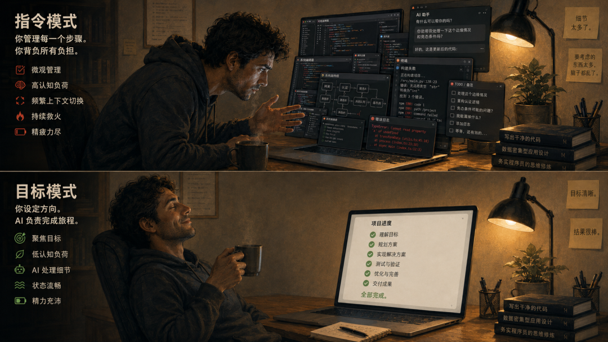

最近半年，使用AI coding agent已经是程序员群体的标配了。
不管是 Claude Code、Codex 还是 Cursor。这些工具的能力在过去一年里提升得很快，能独立完成的任务范围也越来越大。按理说，效率应该越来越高才对。
但我听到的反馈，和我自己的体感，都指向另一个方向：用上 AI agent 之后，心理上反而更累。
不是"AI 写的代码质量不好"那种技术层面的不满，而是一种持续的心力消耗。感觉自己不是在指挥 AI 干活，而是在被 AI 带着跑。像一个永远停不下来的接力赛：你把一段意图丢过去，它几秒钟就返回一大段代码；你开始看，开始纠偏，开始指出哪里没对上；它又几秒钟返回修正版；你再看，再纠偏。循环往复。
速度确实快了很多。但人的精力也在这个循环里被抽干了。
问题可能不在 AI，在协作方式
我回过头去想这个状态是怎么形成的，发现自己的协作方式其实一直没怎么变过。
大概的模式是这样的：接到一个需求，我先在脑子里把方案想好——架构怎么设计、模块怎么拆、每一步要实现什么。然后我把具体的实现指令丢给 AI agent。它按照我的描述去写代码。如果它写出来的东西和我脑子里想的不一致，我就给出修正意见，让它再改。
这个流程听起来没什么问题。甚至可以说，它体现了程序员的专业素养，先规划，再执行，人在做架构决策，AI 在做代码实现。
但问题是，这个流程有一个隐含的前提：你对需求的描述必须是完整且精确的。
实际上很多需求本身就不是完整的。你在写的可能是一个之前没做过的功能，你对它的理解也是在写的过程中逐渐加深的。你脑子里有一个大致方向，但具体到每一个函数、每一个边界条件，很多细节是你在看到代码之后才知道"哦，原来这里需要考虑这个"。
在这个过程里，你把 AI 当作一个高速的打字员——它负责把你脑海里的东西翻译成代码。但因为你脑海里的东西本身就在变化，而 AI 的翻译速度远超一个人的思考速度，你就会发现自己一直在追赶，一直在纠偏、一直在补上下文、一直在解释"不是这样，是那样"。
"AI 把工作中容易的部分拿走了，留下的是难的部分。"这是我最近看到的一个说法，来自 EclipseSource 的一篇文章。它说的不是 AI 的缺陷，而是 AI 改变工作结构的方式。写代码这件事本身，从来不是程序员工作中最累的部分。最累的部分一直是理解问题、设计方案、做出取舍。但以前，写代码的节奏和思考的节奏是匹配的。你一边写一边想，手和脑在同一个速度上。现在 AI 把"写"这个环节加速到了极致，但"想"的速度并没有变快。这两者之间的速度差，才是压力真正的来源。
前段时间 Simon Willison 在公开场合说过一段话，大意是：用好 coding agent 用尽了他 25 年的全部经验，他可以同时启动四个 agent，但到上午 11 点就完全耗尽了一天的精力。他是 Django 的联合创始人，在技术判断力上毋庸置疑，但连他也觉得累。这让我意识到这可能不是个别现象。
换了一种方式，感受不太一样
最近我开始尝试另一种做法。
具体来说，我不再给 AI 写详细的实现步骤了。我会把一个任务的目标说清楚。要达成什么效果、满足什么约束条件、用什么方式检验它是不是真的做完了。然后让它自己去规划、执行、迭代。Codex 的 goal 模式大概是这个思路：你给一个目标和检验标准，它自己去跑，跑完回来告诉你做了什么、是否通过了检验。
头几次用的时候，我还有点不习惯。因为这意味着我要在相当长一段时间里（也许是十几分钟，也许是半个小时）完全不看 AI 在干什么。它自己在那边迭代，我在做别的事。等它回来告诉我"做完了，检验通过了"，我再去看结果。

和前一种方式相比，最大的区别不是效率，而是心力的消耗方式完全不同。
在过去的模式里，我大部分的精力都花在了"追踪 AI 做对了没有"这件事上。这是一件非常消耗注意力的事：你要时刻保持对需求的完整心智模型，同时评估 AI 输出的每一处是否符合这个模型。有点像你让一个实习生帮你整理一份资料，但他整理的速度是你的十倍，你还没来得及想清楚自己到底要什么，他已经交上来三版了。
在后面的模式里，我需要做的事情变成了两件：在开始之前，把目标和检验标准想清楚；结束之后，检查结果是否达到了目标。中间的执行过程，我不参与。
前者要求持续投入注意力做实时纠偏，后者要求一次性想清楚目标和标准。我个人的感受是，后者对心力的消耗要小得多，因为在前期定义目标时，是可以通过一次性深度思考来完成的，不需要长时间保持注意力的持续在线。
这个感受和管理一个人，确实有点像
我后来想，这件事在管理学里可能早就有人讨论过了。
有一种说法是：管理者最容易犯的错误，是把任务分解得太细、指派得太具体，然后发现自己要花大量时间追踪每一件任务的进展、纠正每一个偏离。这个模式消耗的不是被管理者的能力，而是管理者的心力。真正高效的管理者会做另一件事：把"结果"而不是"任务"交给对方，告诉他要达成什么效果、怎么衡量成功，然后让他自己去想办法。
我在用 AI agent 的时候，之前的状态大概就像第一种管理者。我以为自己在做架构决策、AI 在搞实现，但实际上，我做的不是架构决策，是逐条的施工指令。这种颗粒度的工作方式，天然地绑定了我的注意力。
这个类比不是想说"AI 和下属一样"。只是说，任何委托关系——不管是人对人，还是人对 AI，都存在一个共同的问题：如果你对被委托方的干预粒度太细，你的认知负担会随着对方的执行速度同步放大。
当然，AI 和有经验的工程师之间有一个重要区别：真人下属在你定义完目标之后，可以主动识别需求里的模糊地带、主动找你确认；而 AI agent 目前的模式更接近于"你给了什么就是什么"，它对模糊需求的澄清能力还比较有限。这也是为什么目标定义这件事本身就变得格外重要。前期需要花更多时间想清楚检验标准是什么，否则它可能会在偏离的方向上迭代很久，直到你发现为止。
写到这里，我意识到这篇文章不能给一个确定的结论。因为我自己也只是刚开始尝试这种转变，并没有大量的经验来证明"目标导向一定比指令导向更好"。它只是一个阶段的个人记录。
我能相对确定的是：过去那种"我设计，AI 实现"的协作模式，对我来说确实制造了相当程度的心力消耗。而最近换了一种方式——把目标说清楚，让 AI 自己规划和执行，我只看检验结果。至少从现阶段感受来看，工作的节奏感变好了。
这篇文章没有想告诉谁应该怎么用 AI agent。如果你也在用，也有类似的疲惫感，或许可以试试把"给指令"换成"给目标"，看看感受会不会不一样。如果试了觉得没什么变化，那也没关系。每个人的工作习惯不一样，可能对你来说有效的协作方式还没出现，或者你已经找到了自己的一套。
我只是觉得，关于"怎么和 AI 一起工作"这件事，我们可能还处在非常早期的阶段。现在讨论更多的似乎是 AI 能做什么、不能做什么，但讨论得比较少的是，我们和它之间的协作关系，本身应该是什么样的。这个问题未必有标准答案，但至少值得想一想。